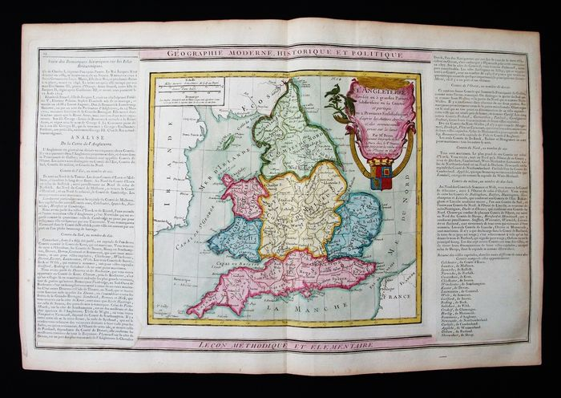
139Inglaterra dividida en 5 partes y 52 condados140Irlanda dividida en provincias
›
175Mapa ANDALUZIA
›
219Carte de la partie Septentrionale d'Afrique ou de la Barbarie
›
574América meridional
›
575Estrecho de Gibraltar
›
576Vista de Gibraltar
›
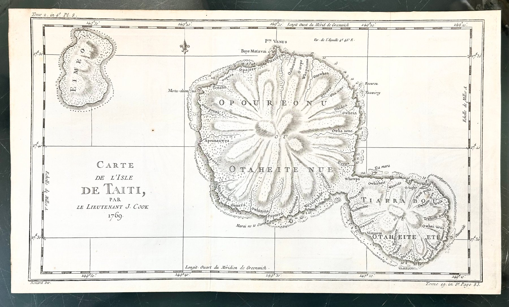
577Mapa de la isla de Tahití 578Mapa de las islas Malvinas
578Mapa de las islas Malvinas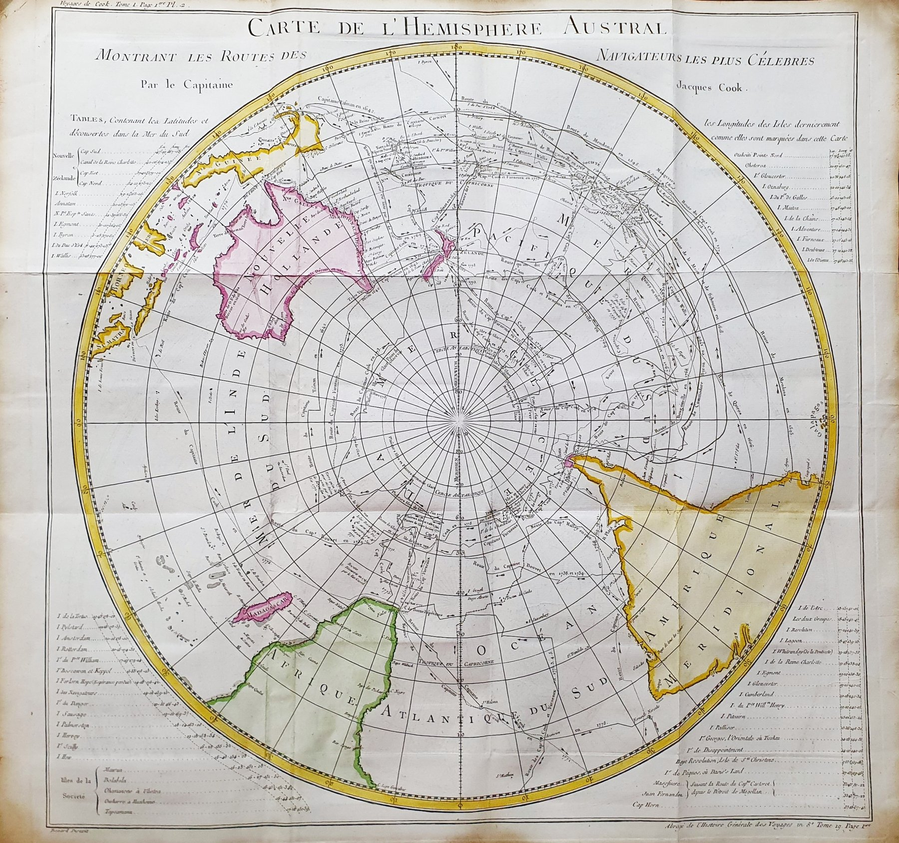
579Mapa Argentina Austral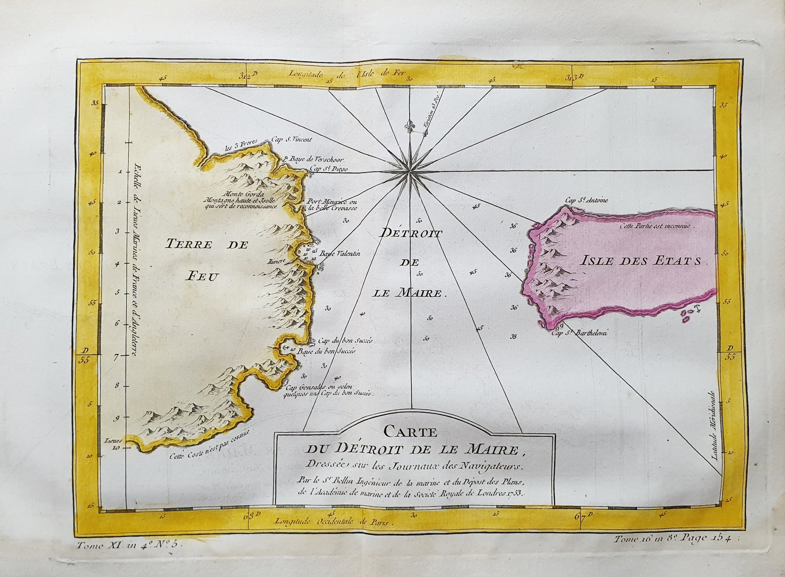
580ARGENTINA — Estrecho de Le Maire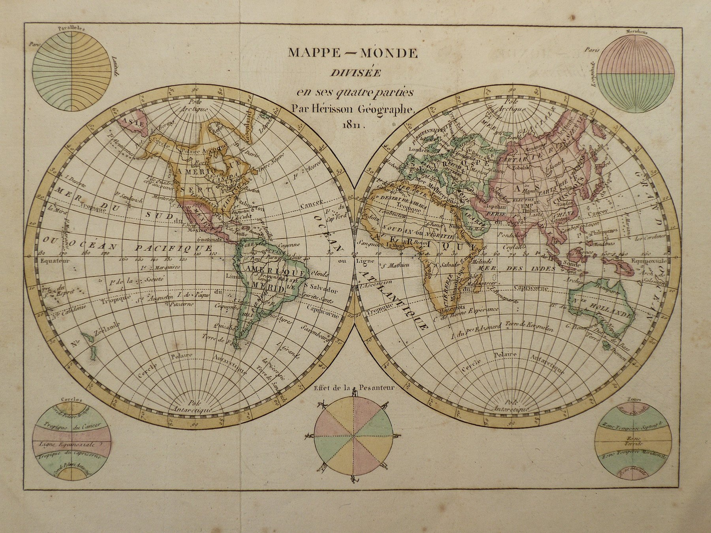
581Mapa Mundi Hérisson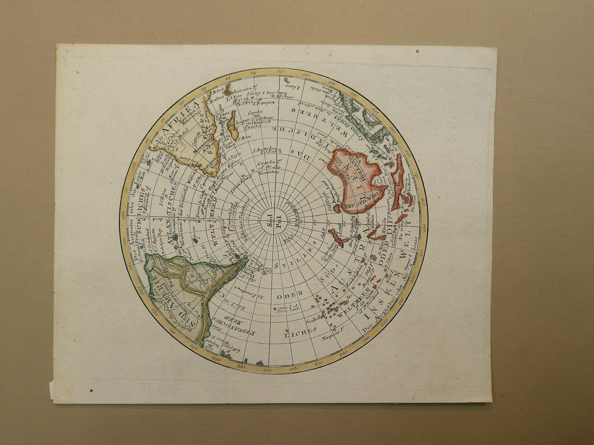
582Australia polo sur 583Mapa Río de la Plata
583Mapa Río de la Plata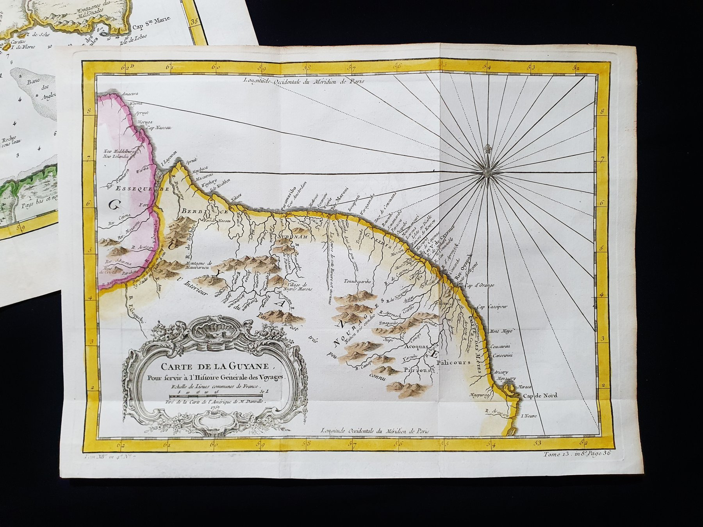
584Mapa de la Guyana 585Mapa de Malvinas
585Mapa de Malvinas 586Mapa de Sudamérica — Isaäk Tirion
586Mapa de Sudamérica — Isaäk Tirion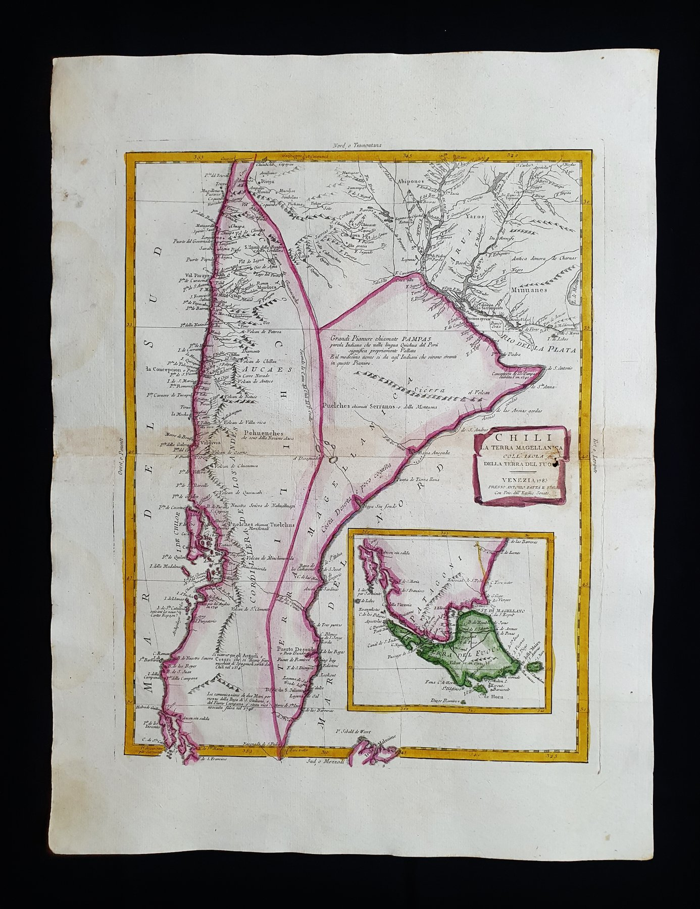
587Mapa de Sudamérica — Antonio Zatta 588América — Extremo meridional
588América — Extremo meridional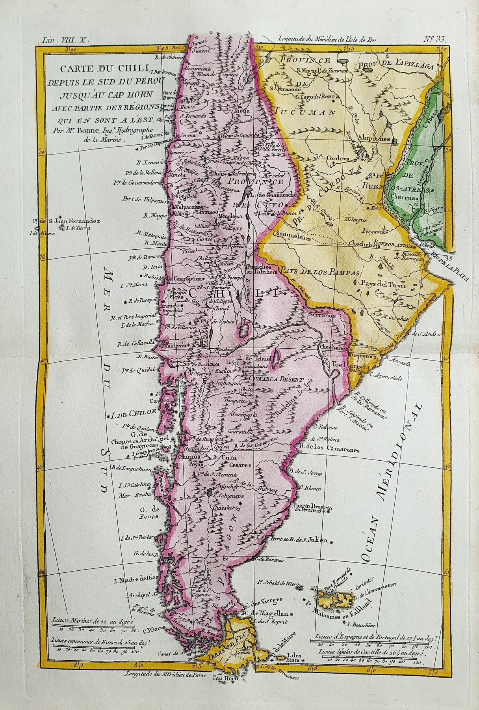
589América del Sur — Rigobert Bonne 590Mapamundi — Hemisferio Septentrional
590Mapamundi — Hemisferio Septentrional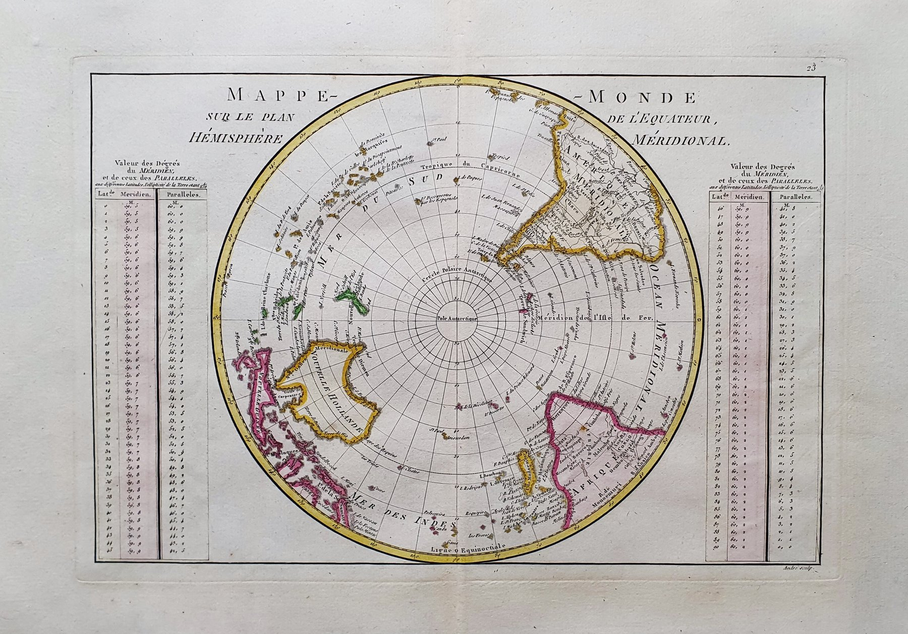
591Mapamundi — Hemisferio Meridional 592América del Sur — Lapie / Malte-Brun
592América del Sur — Lapie / Malte-Brun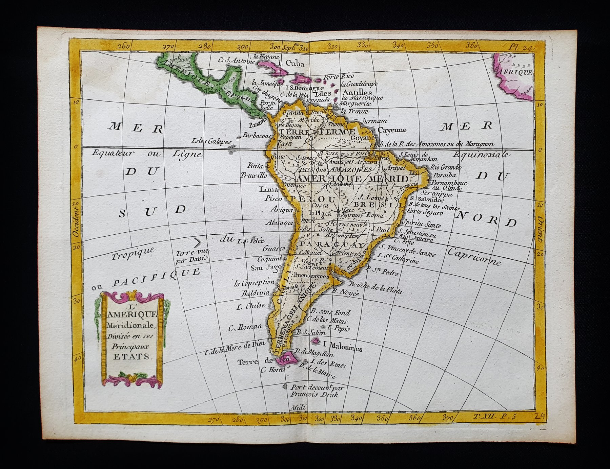
597Argentina — Moutard-De la Porte 605Mapa del Río de la Plata
605Mapa del Río de la Plata 606Sudamérica — La Haye
606Sudamérica — La Haye 607Sudamérica Meridional
607Sudamérica Meridional 608Malvinas
608Malvinas 609Sudamérica
609Sudamérica 610Sudamérica — Adrien Brué
610Sudamérica — Adrien Brué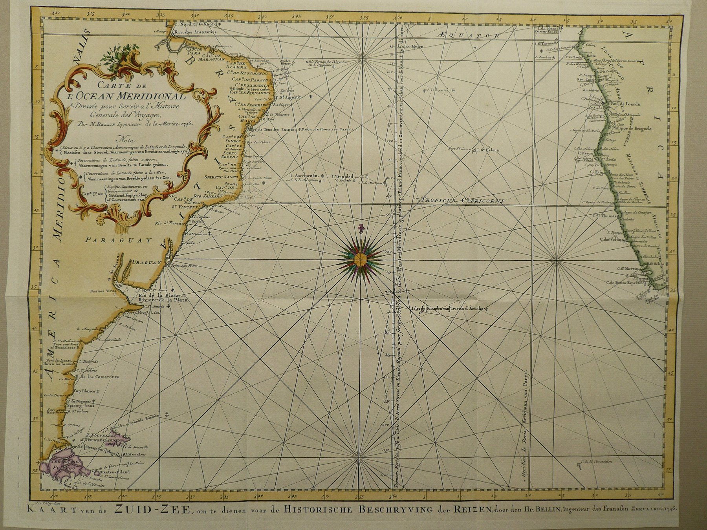
611Islas Malvinas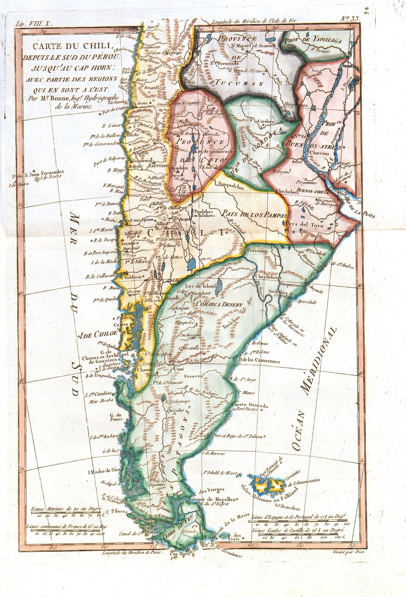
612Sudamérica — Bonne / Raynal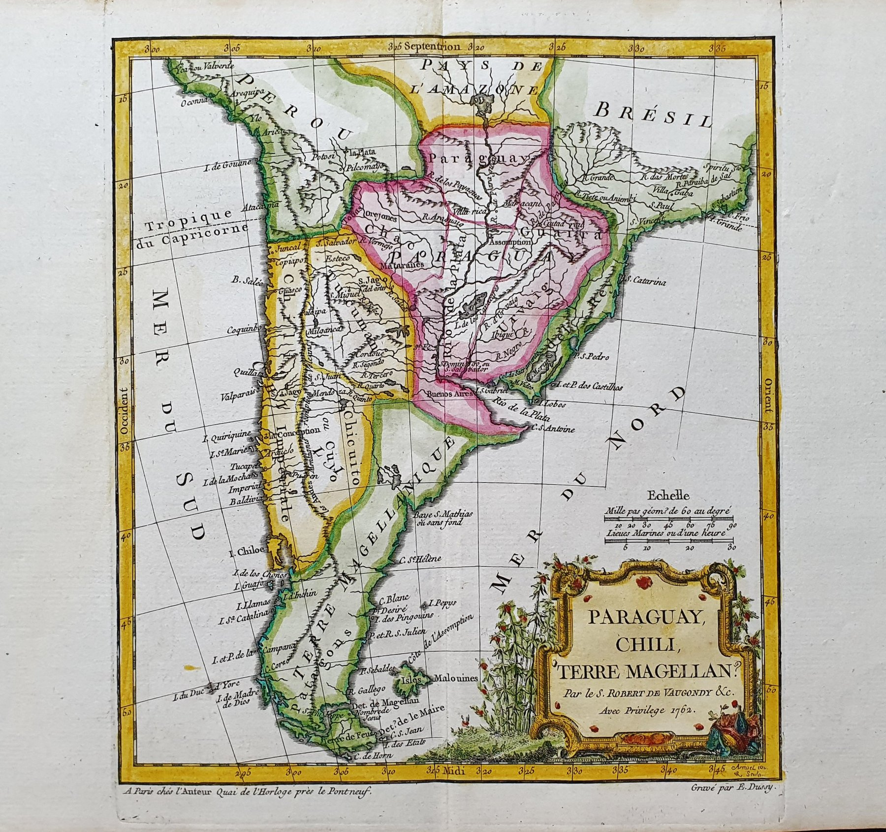
613Tierra del Fuego — R. de Vaugondy